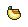

Elementos

Ninja do Labirinto

Bem-vindo ao emocionante mundo do Runner Labirint, um jogo desafiador que testará suas habilidades de navegação e raciocínio rápido. Neste jogo, você assume o papel de um Sapo corajoso e aventureiro em busca de um troféu lendário e deliciosas bananas espalhadas por todo o labirinto. Prepare-se para uma jornada repleta de diversão e desafios!
O Runner Labirint é um labirinto complexo, composto por corredores estreitos, caminhos sinuosos e confusos. Seu objetivo é encontrar o troféu escondido em algum lugar do labirinto e coletar todas as bananas ao longo do caminho. No entanto, não será tão simples quanto parece. Você enfrentará obstáculos, como paredes bloqueando seu progresso e até mesmo armadilhas.